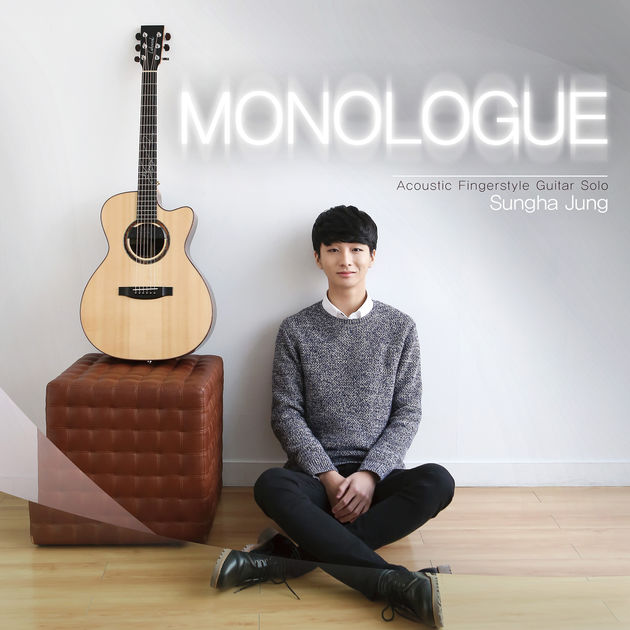
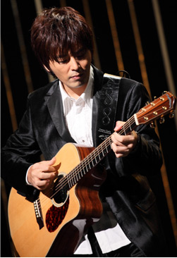
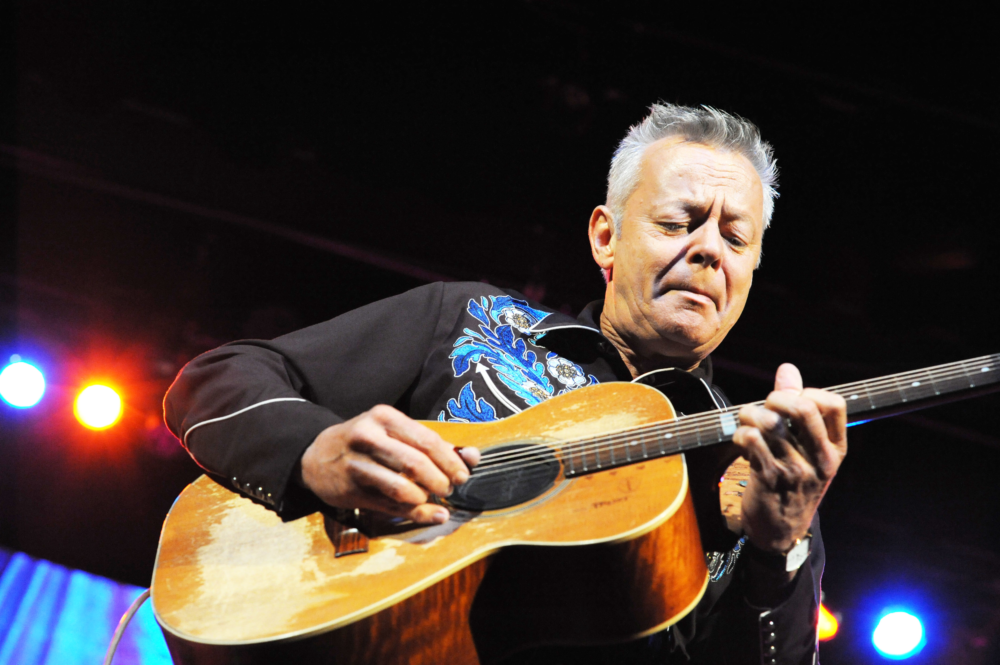

this song that you listening is Kotaro Oshio-Twilight. this song is well expressed about the feelings of twilight. kotaro oshio is a famous acoustic fingerstyle guitarlist. and he is one of my favorite musicaian. now i'm gonna introduce three famous guitarist.
guitarist picture
guitarist sungha jung guitarist kotaro oshio guitarist tommy emmanuel    my hobby is plaing acoustic guitar. since i greduate high school, i learned it by my self.
it's not easy to learn, but when you get used to it, i think that there's no attrative,cool musical intrument than guitar.
my favorite guitarist
sungha jung
sungha jung is so talented guitarist. he has been playing acoustic guitar since he was kid. when he was child, he appeared tv show, as a very talented guitarist kid even he was in elementary school student . since he appeared on the show, he seized that opportunity , and became world class guitarist.
now his youtube subscriber's are more than 4millons. he became a big celcebrity guitarrist. this is his youtube address:sungha jung youtube offical site.
among his guitar songs, my favorite song is Sam Smith- I'm Not The Only One by acoustic guitar version